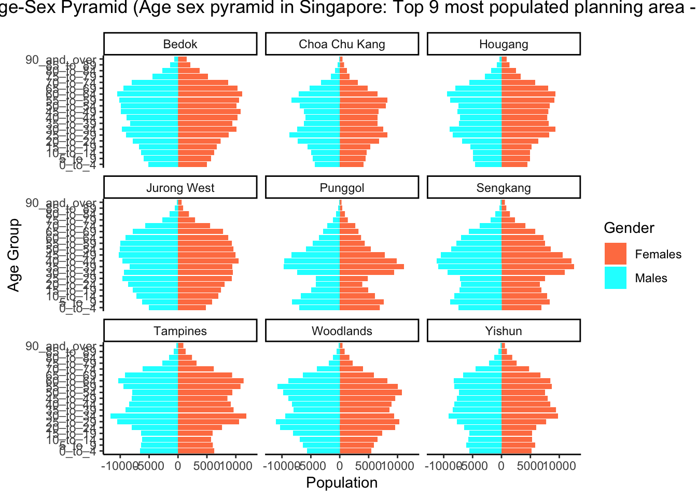

pacman::p_load(tidyverse, ggthemes, ggiraph, plotly)Takehome02
Overview
This take-home exercise is done based on a take-home exercise 1 submission prepared by a classmate.The peer submission will be critiqued in terms of clarity and aesthetics, and the oringinal design will be remade using data visualization principles and best practice learnt in lesson 1 and 2.
The dataset: area _age_sex_dwell202206.csv used in take-home exercise 1 and 2 is downloaded from Department of statistic of Singapore, Find Data-Population-Geographic Distribution-Population trends
Data Preparation
Data preparation steps taken by the original author of the critiqued graph are listed here for easy reference. As this is not the focus of this exercise, i will not go into details about it.
Visualization critique and remake
there are four graph in total in this take-home exercise 1 and they will be reviewed and remade in terms of clarity and aesthetics
Critique
clarity
-Title is not clear enough.from the title, users cannot tell what topic and info will be delivered.a possible title could be
Age sex pyramid in Singapore: Top 9 most populated planning area - June 2022
-Bins plotted too tightly.there are too many bins from the whole view, it is hard for viewers to locate and identify a apecific figure and pattern.
-Lack of indicators. there are not any reference line to help viewers to locate any detail of the figure
Aesthetics
-Do not have any color combination. there are only blue and red with white background which can not attract any attention
-Too little area between axis and graph. There is currently no segreation between the graph area and the axis. try to add color and other graph to make it easier for viewers to see
Libraries
The R packages we’ll use for this analysis are:
tidyverse - a family of modern R packages specially designed to support data science, analysis and communication task including creating static statistical graphs.
ggplot2 - a system for declaratively creating graphics, based on The Grammar of Graphics (ggplot2 is included in the tidyverse package, i’m highlighting it here for emphasis, since it’s our main tool for visualisation)
ggthemes - The ggthemes package provides extra themes, geoms, and scales for the ggplot2 package
ggiraph - a package that provides interactive elements to ggplot like animations and tooltips (was not used after experimenting with it, leaving it here for reference)
plotly - another package that provides interactive elements to ggplot (was not used after experimenting with it, leaving it here for reference)
Preparing the Data Set
loading Packages
Importing and tidying the data
sg <- read_csv('data/respopagesexfa2022.csv')After importing the original data into Rstudio, i want to check if there is any incorrect or messy
str(sg)spc_tbl_ [75,696 × 7] (S3: spec_tbl_df/tbl_df/tbl/data.frame)
$ PA : chr [1:75696] "Ang Mo Kio" "Ang Mo Kio" "Ang Mo Kio" "Ang Mo Kio" ...
$ SZ : chr [1:75696] "Ang Mo Kio Town Centre" "Ang Mo Kio Town Centre" "Ang Mo Kio Town Centre" "Ang Mo Kio Town Centre" ...
$ AG : chr [1:75696] "0_to_4" "0_to_4" "0_to_4" "0_to_4" ...
$ Sex : chr [1:75696] "Males" "Males" "Males" "Males" ...
$ FA : chr [1:75696] "<= 60" ">60 to 80" ">80 to 100" ">100 to 120" ...
$ Pop : num [1:75696] 0 10 20 60 10 0 0 0 20 50 ...
$ Time: num [1:75696] 2022 2022 2022 2022 2022 ...
- attr(*, "spec")=
.. cols(
.. PA = col_character(),
.. SZ = col_character(),
.. AG = col_character(),
.. Sex = col_character(),
.. FA = col_character(),
.. Pop = col_double(),
.. Time = col_double()
.. )
- attr(*, "problems")=<externalptr> We can observe that there are more data than we really need, so i choose select function to select some columns.
sgsubset <- sg %>%
select(PA, AG, Sex, Pop)
names(sgsubset) <-c('Planning_Area', 'Age_group', 'Gender', 'Population')Use level to check the order of factors
levels(factor(sgsubset$Age_group)) [1] "0_to_4" "10_to_14" "15_to_19" "20_to_24" "25_to_29"
[6] "30_to_34" "35_to_39" "40_to_44" "45_to_49" "5_to_9"
[11] "50_to_54" "55_to_59" "60_to_64" "65_to_69" "70_to_74"
[16] "75_to_79" "80_to_84" "85_to_89" "90_and_over"I notice that “5_to_9” is out of place. Use mutate() and arrange() to correct this.
order <- c("0_to_4", "5_to_9", "10_to_14", "15_to_19", "20_to_24", "25_to_29", "30_to_34", "35_to_39", "40_to_44", "45_to_49", "50_to_54", "55_to_59", "60_to_64", "65_to_69", "70_to_74", "75_to_79", "80_to_84", "85_to_89", "90_and_over")
sgsubset <- sgsubset %>%
mutate(Age_group = factor(Age_group, levels = order)) %>%
arrange(Age_group)
levels(sgsubset$Age_group) [1] "0_to_4" "5_to_9" "10_to_14" "15_to_19" "20_to_24"
[6] "25_to_29" "30_to_34" "35_to_39" "40_to_44" "45_to_49"
[11] "50_to_54" "55_to_59" "60_to_64" "65_to_69" "70_to_74"
[16] "75_to_79" "80_to_84" "85_to_89" "90_and_over"Preparation for visualisation
Check_PA <- sgsubset %>%
group_by(`Planning_Area`) %>%
summarise(sum_pop = sum(Population), .groups = 'drop') %>%
arrange(sum_pop,.by_group = TRUE) %>%
top_n(9) %>%
ungroup()
Check_PA# A tibble: 9 × 2
Planning_Area sum_pop
<chr> <dbl>
1 Punggol 186250
2 Choa Chu Kang 190460
3 Yishun 222770
4 Hougang 227720
5 Woodlands 252720
6 Sengkang 253050
7 Jurong West 258520
8 Tampines 265610
9 Bedok 278870sgsubsettop9 <- sgsubset %>% filter(`Planning_Area` %in% c('Bedok', 'Tampines', 'Jurong West', 'Sengkang', 'Woodlands', 'Hougang', 'Yishun', 'Choa Chu Kang', 'Punggol'))Visualising the Age-Sex Pyramid in a Trellis Display
Design X and Y
agesexP <- ggplot(sgsubsettop9,aes(x = `Age_group`, y = Population,fill = Gender)) +
geom_bar(data = subset(sgsubsettop9,Gender == 'Females'), stat = 'identity') +
geom_bar(data = subset(sgsubsettop9,Gender == 'Males'), stat = 'identity', mapping = aes(y = -(Population))) +
coord_flip() +
facet_wrap(~`Planning_Area`,ncol = 3)design
agesexP +
ggtitle("Singapore Age-Sex Pyramid (Age sex pyramid in Singapore: Top 9 most populated planning area - June 2022") +
theme_classic() +
theme(plot.title = element_text(hjust = 0.5, vjust = 3)) +
xlab("Age Group") +
ylab("Population")+
scale_fill_manual(values=c('coral','cyan'))
Learning points
Tableau and Rstudio are two different mindset visualization methods.
first one is more visual and convenient to create presentation ready visualisations without any coding knowledge. This makes tableau much more accessible to the general public and beginners
On the other hand, visualisations in ‘R’ can achieve the same if not better visualisation that Tableau with much more granular control over the various attributes and objects shown. However the difficult part is coding knowledge required.
In the end, which tool to be used may depended on the people and the requirement.
No matching items